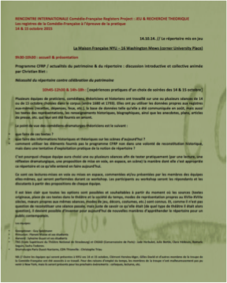
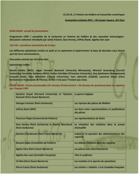
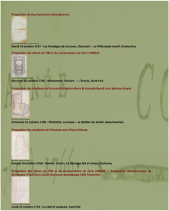
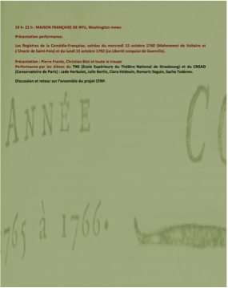

Le 14 et 15 octobre 2014 se réunissaient un groupe international et éclectique – à dessein – composé de chercheurs représentant différents champs des humanités, de théoriciens ou encore de comédiens pour explorer les possibilités offertes par la base de données du CFRP à la fois dans une approche universitaire mais aussi pratique. C’est ainsi que je me vis proposer de présenter la soirée du dimanche 15 octobre 1786. Le parti-pris était de prendre comme point de départ l’outil informatique développé par Hyperstudio.
